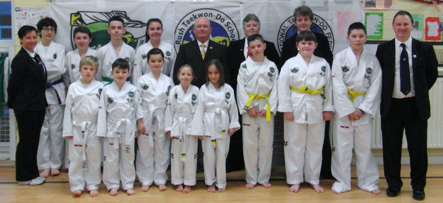
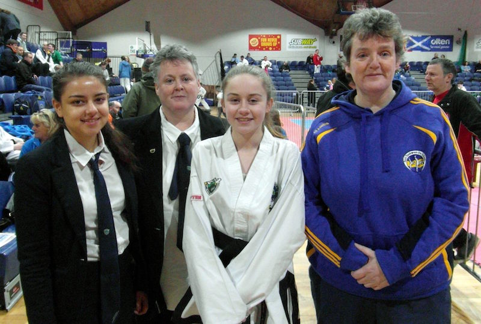
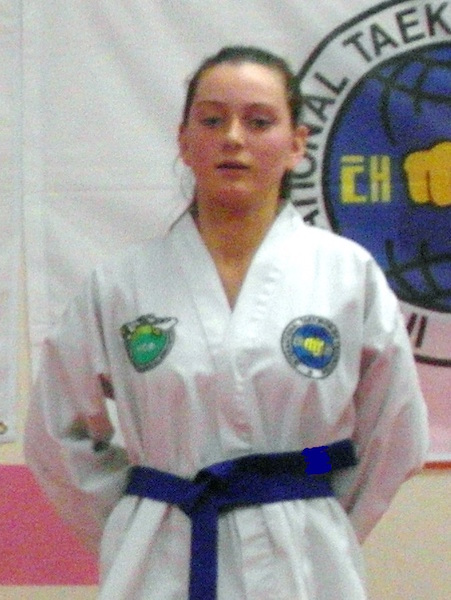
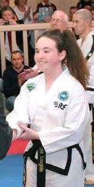
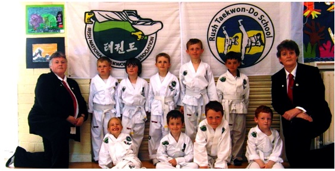
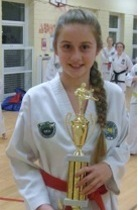
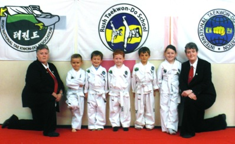

Happy Easter!
The Instructors would like to wish all our students, families & friends a Happy Easter. We are back on Tuesday 5th April in our new training venue with the usual class times.
Spring Grade with Master O'Toole
On Friday 18th March Master Brendan O’Toole conducted the Spring grade.12 students presented themselves for grading ranging from yellow tip to red belt candidates. All students performed exceptionally well and Master O’Toole was delighted with the standard shown on the night.

Remember Us Balbriggan
On Saturday the 5th March Rush TKD hosted a Taekwon-Do Class for Remember Us Balbriggan (An intergrated Social Group for Young People/Adults with Special Needs).
INTA’s International Open 2016
A big congratulations to all our competitors who participated in the 17th INTA International Open in Tallaght on the 6th & 7th February 2016. Over 650 competitors taking part and once again there was a great effort from all our students who took part. A special mention to Jack & Rebecca taking part in their first ever competition. Also Dara who took part in her first competition as a black belt. Congratulations to Oran & Mark two very experienced competitors and thanks to everyone for representing Rush TKD School.

Firhouse 2016
Mark & Oisin represented Rush at the recent Firhouse Invitational 23 January 2016. Thanks also to Alan for coaching and Ms Wiseman for umpiring

January 2016

The Instructors would like to welcome everybody back after the Christmas holidays. The Calendar of events for 2016 has been updated, to include all the upcoming events that Rush TKD plan to participate in. All students are encouraged to attend as many of these events as possible. We are looking forward to a great year ahead!
Christmas Holiday
We would like to wish all our students, families and friends a very Happy Christmas & Healthy 2016. Rush TKD will close for the holidays after all classes on Wednesday 16th December and we are back kicking Wednesday 6th January 2016!
Students of the Year 2015
Congratulations to Daniel, Alan & Alan who were awarded our Student of the Year Awards for 2015. Hard work and regular training really pays off.
Daniel
Alan

Alan
Winter Grade with Master Martin
Congratulations to all students who graded on Friday 11th December under Master Martin. 20 students presented themselves for all grades up to black tag. All students performed exceptionally well and Master Martin was delighted with the standard shown on the night. Congratulations to all students and particularly to Alan as this was his last grade with Rush TKD next up for Alan the INTA Grading Panel for his black belt sometime in 2016.
Winter Grade TKD Juniors & TKD Kids
On Wednesday 9th December 15 students presented themselves for the TKD Kids and Junior grading. Congratulations to Cillian, Jake, Jamie & Oran who have started their TKD journey and a big congratulations to Ciaran, Leah & Oran who have now graduated to our Junior TKD class.
Black Belt Grading December 2015
Immensely proud day for Rush at the INTA Black Belt Grading in the Anner Hotel Thurles today 5th December. Days like this make it all worthwhile. Big congrats to Jack, Dara, Ellen on your 1st Degree Black Belt and on Sunday 6th December another great day when Nicole achieved her 2nd Degree Black Belt.



Master O’Tooles Visit
On Friday 20th November 2015 Master Brendan O’Toole hosted the classes for Rush TKD.
Master Martin’s Visit
On Friday 23rd October 2015 Master Gerry Martin hosted the classes for Rush TKD.
National Championships 2015
On Saturday 3rd October a small but mighty team represented Rush at the INTA National Championships in the Basketball Arena, Tallaght.
Summer Holidays!
Rush Taekwon-Do will close for the Summer Holidays after all classes on Friday 30th June and reopen for the new season on Wednesday September 9th 2015. Don’t forget to check out our latest news and facebook page for updates.
Summer Grades
On Friday 19th June Rush held its Summer Grade. This grade was conducted by Ms Ann McCarthy, Ms Lucia McCarthy and Ms Miriam Grogan. Well done to all successful students on a very good standard reflecting all the hard work done in class in the weeks prior to grading. As always you make your Instructors proud.
TKD Junior Grades
9 Taekwon-Do Juniors presented themselves for the TKD Junior Summer Grade conducted under the club Instructors on Wednesday 17th June. Well done everybody some excellent performances.

TKD Kids Grades
11 Taekwon-Do Kids presented themselves for the TKD Kids Summer Grade conducted under the club Instructors on Wednesday 17th June. Well done everybody. Some students will be moving up to the mainstream TKD Junior class following some excellent results.
Rush Club Championships 2015
Our annual Club Championships took place on Wednesday 3rd June during our usual class times. We divided the students into 3 sections and the standard of Taekwon-Do across all the sections was excellent. All divisions from our youngest Taekwon-Do kids right up to our senior students performed to the best of their abilities in an effort to impress our judge on the night Ms Frances O’Neill and win one of the many trophies on display. A big thank you as always goes out to our parents, grandparents and friends who packed the hall to capacity to lend support to all the students. Congratulations to everybody on a tremendous evening of Taekwon-Do.

MDTS 2nd Invitational Tournament
On Saturday 23rd May 2015 3 students from Rush attended the MDTS Tournament in Rosemount School, Enniskerry Road, Kilternan Co Dublin. Excellent performances by all students and valuable experience gained on the mats. With every competition the students enter you can see the improvements and again more silverwear making its way back to Rush. Well done to all our competitiors and a big thank you to our coach and umpires.
INTA’s Technical Seminar
6 students flew the flag for Rush TKD at the recent INTA Technical Seminar while the Instructors were resting in Las Vegas!!!!. Well done everybody.
Spring Grade with Master O’Toole
On Friday March 27th 2015 Master O'Toole performed our Spring Grade. The standard on the night was excellent as we had prepared very hard over the previous few weeks and months. Well done to all 19 students.
TKD Juniors Spring Grade
Congratulations to all our 19 Junior TKD Students who graded last night under the club instructors. There was a tremendous atmosphere throughout and every students performed brilliantly. Well done everybody.
TKD Kids Spring Grade
On Wednesday 25th March out TKD Kids graded under the club instructors. Some very nervous and anxious students took to the floor for the very first time watched closely by their terrified parents. A great display of skill by our youngest students.
Rush host classes for Remember Us
On Saturday 7th March Rush TKD Black Belts hosted a 3rd class for Remember Us Balbriggan (an integrated social group for young people/adults with special needs) in their training Centre. A hectic 90 minute session incorporating warm up, stretching, punching, kicking focus pads and shields and an obstacle course. Thanks to all black belts for giving up their spare time to assist with this class.
Firhouse Invitational February 2015
A small but deadly team from Rush attended the Firhouse Invitational Tournament on Saturday 21st February in Firhouse, Tallaght. We would like to thank our parents for the fantastic support as always and our umpires on the day who made the tournament run smoothly. Once again Rush students performed outstandingly well and the instructors are very proud of your efforts. More silverware to add to the already fine collection. We hope more students can participate in our next adventure The Master Douglas Invitational in May 2015. Well done everybody.
INTA’s International Open 2015
A big congratulations to all our competitors who participated in the 16th INTA International Open in Tallaght on the 31st January 2015. Over 500 competitors from 6 countries taking part. A great effort from all our students taking part. A special mention to Maedhbh who won her first sparring medal. Congratulations to all our students who won medals and to those who didn’t, thanks for representing Rush TKD School. As always thanks to parents, coaches and umpires for your continued support. Our next tournament is the Firhouse Invitational and will take place on Saturday 21st February. It looks like a busy year ahead!
Welcome Back 2015
The Instructors would like to welcome everybody back after the Christmas holidays. The Calendar of events for 2015 has been updated, to include all the upcoming events that Rush TKD plan to participate in. All students are encouraged to attend as many of these events as possible. We are looking forward to a great year ahead!
Christmas Holidays
The Instructors of Rush TKD would like to wish all our students and their families a very Happy and Peaceful Christmas. Rush TKD will close for the holidays after all classes on Wednesday 17th December and we will re-open on Wednesday 7th January 2015 with the usual class times.
Students of the Year Awards 2014
TKD Kids
Mark
TKD Junior
Jack

Student of the Year
Dara
TKD Senior
Nicole
Merit Awards 2014
Most Improved Student
This year the instructors decided to award some additional trophies to reward students who worked hard during the year and deserved some recognition for their efforts. Merit Awards went to Lia, Michael, Olivia, Emmet, Ciaran and David. Most Improved student Award went to Diarmuid.
Winter Grade with Master O’Toole
On Friday 12th December Master Brendan O’Toole held the Winter grade for Rush TKD. 15 students presented themselves for grading ranging from beginner yellow tip to black tag. All students performed exceptionally well and Master O’Toole was delighted with the standard shown on the night. Congratulations to Charlie, Rebecca, Frankie and Daniel on their Yellow Tips their first official grade and also to Dara on her Black Tip her last official grade with Rush TKD. Dara’s next grade will be in front of the official INTA Black Belt Grading Panel. Well done everybody.
TKD Junior Winter Grade
On Wednesday 10th December 16 students presented for the TKD Junior grade hosted by the club instructors. All students had prepared well and a good standard was achieved by all. Well done to everybody that passed and continue on their TKD journey.
TKD Kids Winter Grade
9 students from our TKD Kids class were successful at the Winter Grade conducted by the club instructors on Wednesday 10th December. Congratulations to Nicky, Rowan, Ciaran, Shane and Danny who achieved their first black stripe and have officially started their TKD journey. Well done also to Louie, Lia, Mark and Daniel who have now graduated to our Junior TKD Class.
Halloween 2014
There will be no classes of Friday 31st October as we celebrate Halloween.
Club Merchandise
All INTA doboks (Uniforms) and sparring gear can be purchased directly from the club instructors. Club Tracksuits/hoodies are available to order now for Christmas, final date for ordering these items will be 7th November to guarantee delivery for Christmas.
Change of Training Venue & Day Change
Due to the closure of DP Gymnastics at the end of October 2014 Rush TKD will now be training Wednesday & Friday nights in Rush National School Channel Road, Rush.
INTA National Championships 2014
Rush TKD had a fantastic day at the INTA National Championships held in Kilkenny on Saturday the 18th October 2014. 9 competitors, 3 umpires and 4 coaches flying the flag for Rush resulting in trophies in all the disciplines of TKD patterns, sparring and special techniques. All our competitors performed extremely well reflecting the good & focused training prior to the competition. Congratulations to Dara, Oran, Conor, Diarmuid, Alan, Oisin, Senan, Maedhbh and Mark on wonderful individual performances. 5 Gold, 3 Silver and 3 Bronze made its way back to Rush. A fantastic achievement!
INTA National Umpire Course
Well done to Ms Joan Wiseman, Mr Brian Kenny and Ms Nicole Loughlin who completed the INTA National Umpire Course held in Portarlington on the 4th/5th October 2014.
Welcome Back!
The instructors would like to welcome everybody back after the Summer Holidays and a big welcome to all our new members. We advise all our students to check out our updated Calendar of events for the remainder of the year!
Summer Holidays!
Rush TKD will close for the Summer Holidays after all classes on Friday 11th July 2014 and will reopen for the new season on Tuesday 2nd September.
1st Master Douglas Invitational Tournament
On Saturday 14th June 6 students from Rush supported by their family and friends represented Rush at the 1st MDTS Invitational Tournament in the Rosemount School, Kilternan Co Dublin. Thanks to instructors, coaches & umpires for giving up another Saturday to represent Rush. A great day for Rush TKD:- 6 competitors equals 3 gold, 3 silver & 2 bronze medals. A wonderful haul!
TKD Kids Grade
5 students from our TKD Kids class were successful at the Junior grade held on Tuesday 10th June. Well done to Lia & Louie on their first TKD stripes.

Rush Club Championships 2014
A very big congratulations to all our students who participated in the Rush Club Championships 2014. Everybody performed well and our judges had some very tough decisions. Thanks to all parents, grandparents and friends who supported and encouraged everybody present. Congratulations to all winners.
Summer Grade with Master O’Toole
On Friday 13th June our Summer grade took place with Master O’Toole when 24 students presented themselves hoping to progress to the next level. A busy and productive evening with everybody proforming to their best abilities. Plenty of fair and constructive feedback from Master O’Toole. Congratulations to all successful students especially our 17 new yellow tags as they begin their TKD journey.
Junior TKD Grade
27 students presented themselves on Tuesday 10th June for the annual summer grade with the club instructors. Everybody had worked hard during the previous few months and this was very evident during the grade itself, Congratulations to everyone who passed the grade.
92nd IIC Dublin
The club instructors accompanied by Nicole completed the 3 day International Instructors Course over the weekend of the 23/24/25 May hosted by the INTA in the Red Cow Moran Hotel Dublin. A great weekend of TKD by Grand Masters Marano, Bos & Lan (ITF Technical Committee). A big congratulations to Nicole on completing her first IIC.
3rd INTA Junior Sparring Challenge
10 students took to the mats to represent Rush at the 3rd INTA Junior Sparring Challenge which took place on Saturday 17th May in the Donnycarney Community Centre. Well done to all our fighters. Our next competition is the Rush Club Championships which will take place on Tuesday 27th May.

Rush host classes for Remember Us Balbriggan
On Saturday 10th May 2014 Rush TKD Black Belts hosted a 2nd class for Remember Us Balbriggan (an integrated social group for young people/adults with special needs) in the Flemington Community Centre. A hectic 90 minute session incorporating warm up, stretching, punching, kicking focus pads and shields and an obstacle course. Thanks to all black belts for giving up their spare time to assist with this class. We look forward to our next class in the autumn.
Happy Easter!
The Instructors would like to wish all our students, families and friends a very Happy Easter and remind you that there will be no classes on Good Friday 18th April.
Spring Grade with Master O'Toole
Our spring grade took place on Friday 28th March 2014 conducted by Master O’Toole with assistance from the club Instructors. 24 students ranging from beginners to senior red belts took to the floor all hoping to progress to the next level. Congratulations to Senan, Conor, Daragh and Calum who passed their very first grade with flying colours and to Ellen and Jack who progressed to 1st kup and will now go forward to the INTA Grading Panel for their Black Belt grading in the near future. Well done to all successful students on a very good standard reflecting all the hard work done in class in the weeks prior to grading. As always you make your Instructors proud.

Sports First Aid Course
Saturday the 22nd March 2014 saw 5 Instructors from Rush take part in a Sports First Aid Course hosted by our TKD friends in Beaumont. A very enjoyable and informative day with plenty of hands on experience and scenario’s played out. We would like to thank our Instructors for taking the time to undergo this important training.
INTA’s International Open 2014
Over the weekend of the 1st/2nd March 2014 13 students from Rush accompanied by their Instructors, Parents, Coaches and Umpires headed to Kilkenny for the INTA’s International Open 2014. Over 400 competitors competed over the 2 days. A special mention to Olivia competing in her very first competition and to Nicole who competed as a Black Belt for the very first time. Well done girls! This was a super tournament for Rush with an impressive amount of medals making their way back to Rush. A clean sweep of the medals in the boys green belt section the proudest moment of the weekend. We would like to thank all our coaches and umpires for their assistance over the 2 days of the tournament.
Well Done Rush!
Firhouse Junior Invitational Tournament 2014
Saturday 25th January saw 12 students from Rush attend the annual Firhouse Invitational Tournament. Both patterns and sparring sections were large leading to many rounds and plenty of practice and it was a great opportunity for our students to gain experience and confidence on the mats. With no easy medals all medals were hard won. A huge haul of gold & silver medals travelled back across the M50 to Rush. Congratulations to all Rush students who as always were a credit to Rush TKD with their patience, good manners, attitude, sportsmanship and team spirit! A big thank you to all our coaches and umpires on the day. Well done everybody. Great Job
Congratulations
Well done to Yasmin & Nicole who both received their 1st Degree Black Belt Certificates from the Club Instructors in our 1st class back after the Christmas Holidays
Christmas Holidays
The Instructors of Rush Taekwon-Do would like to wish all our students and their families a Happy & Peaceful Christmas. Rush TKD has closed for the Holidays and will re-open on Tuesday 7th January 2014 - usual class times. A special message to all our students out there we have a very special supporter this year.
Students of the Year 2013

The Instructors are delighted to announce that:-
TKD Kids Student of the Year - Bobby
TKD Junior Student of the Year - Oran
TKD Student of the Year - Daniel
TKD Senior Student of the Year – Yasmin
The trophies were presented by the club Instructors and Master Brendan O’Toole during the winter
gradings. Congratulations to all students.
Winter Grade 2013
On Friday the 13th December our Winter Grade took places under Master Brendan O’Toole with assistance from the club Instructors. 20 students both junior and senior ranging from the complete beginner up to red belt took to the mats to be tested in all areas – fundamental movements, patterns, step sparring, free sparring, self-defence, theory and power breaking. With nowhere to hide all mistakes and errors were quickly identified. The Instructors will be busy in the New Year with all the feedback from Master O’Toole. Congratulations to all students promoted. Apologies to our junior students as we forgot to take a photo with Master O’Toole.
TKD Junior Winter Grade
22 Taekwon-Do Juniors presented themselves for the TKD Junior Winter Grade conducted under the club Instructors on Tuesday 10th December 2013. Our students had been preparing well and worked hard in the last few months and the results were very evident during the grading. Despite some nerves our students rose to the challenge showing a good level of skill and understanding of the TKD syllabus. Congratulations to all involved. A special mention to Alan, Alex & Oran who now make the transition into our mainstream junior class.
TKD Kids Winter Grade
A Group of 12 eager and enthusiastic TKD Kids took to the mats on Tuesday 10th December 2013 in our annual Winter Grade. Punches, kicks, TKD techniques and drills all performed with passion and spirit. Well done all. Special congratulations to Zara, Bobby, Sean & Evan who have shown great improvements and will now graduate to our Junior TKD Class
Black Belt Grading
Rush TKD reached a milestone this week when 2 of our students achieved their ultimate goals i.e The TKD Black Belt at the INTA National Black Belt grading held in the Sheldon Park Hotel Dublin on Saturday the 30th November 2013. Our 2 girls joined the club as white belts and have progressed at a steady pace through the ranks to achieve their Black Belts – a wonderful achievement. Throughout the past 5/6 years Yasmin and Nicole have trained with passion, enthusiasm, skill and determination resulting in an extremely high standard which was very evident during the Black Belt grading. A special word of thanks for all our students and assistant instructors who assisted in any way preparing them for the grading. The instructors are extremely proud of your efforts and it is a wonderful achievement for both girls. A big congratulations to you both. Well done Yasmin and Nicole. Rush’s finest achievement to date.

Guest Instructor - Ms Lenka Marsikova

Rush TKD were delighted to welcome Ms Lenka Marsikova as our guest instructor for all classes on Tuesday the 5th November. A vigorous warm up in all classes followed by forward/backward rolls, flips, breakfalls, tumbles, self-defence, sparring , speed and reaction drills. Everybody put in a great effort and worked up a healthy sweat! In the senior class we also worked on sparring combinations concentrating on coordination, correct distance and counter attacks with a variety of offensive and defensive moves. Ms Marsikova captivated all those present with her own agility and variety of self-defence techniques. The classes were a hugh success with a great atmosphere throughout and we are already looking forward to Ms Marsikova’s next visit.
INTA National Championships 2013
14 students, 3 umpires, 4 coaches, parents and grannies had a great weekend recently at the INTA National Championships 2013 in the Watershed in Kilkenny. The students from Rush took home an impressive haul of trophies. Our students competed both in patterns and sparring over the course of the 2 days. It was a great effort from all our competitors. A big congratulations to all students who performed with perseverance and determination. A special mention to Maedhbh, Eric, Diarmuid and Alan who made their sparring debuts and more importantly survived!!! Well done to all who took to the mats and represented Rush with distinction and pride. The instructors are immensely proud of you all. Special thanks to our coaches and umpires. Roll on the next tournament!!!!
Congrats!
Well done to Mrs Maria Gallagher and Mr Brian Kenny who both received their 1st Degree Black Belt Certificates from the Club Instructors last Tuesday our 1st class back after our summer holidays.
Welcome Back!
We would like to welcome back all our students after the summer break and hope everybody had a great summer. What a wonderful turnout for our first night back! Check out our CALENDAR OF EVENTS for all the upcoming events Rush TKD School plan to participate in for the rest of the year. All our students are welcome and encouraged to attend as many of these events as possible whether competing, refereeing or supporting fellow students. Looking forward to a great year ahead!
Summer Holidays
Rush Taekwon-Do School will close for the summer holidays after all classes on Tuesday 23rd July. All successful candidates from the recent summer gradings will be presented with their new tags and belts during these classes. The instructors would like to thank all students, parents and supporters for their continued support and hard work during the past year and we look forward to welcoming you all back again on the 3rd September when our classes resume after the summer break.
Happy Holidays
Ms Lucia McCarthy would like to thank all students, parents and friends for your good wishes, cards and gifts following my recent ankle surgery and I hope to be back when we return in September. A special thank you goes to Ms Wiseman, Mr Kenny, Mrs Gallagher and Mrs Geaney who assisted with the classes during my absence. You will all be rewarded at the summer BBQ!!!!!
Summer TKD Grade with Master O’Toole
Our summer grading took place on Friday the 19th July 2013 when 23 students presented themselves for grading ranging in grades from our beginner junior students right up to our senior red tag students. The grading as always was conducted by Master Brendan O’Toole (President & Chief Examiner of the INTA). Fundamental movements, patterns, step sparring, self-defence, breaking, free sparring and theory were all thoroughly examined. A special congratulations to Oran, Alex and Alan on passing their first official TKD grade after graduating from our Taekwon-Do Kids programme. The instructors are delighted with the performances of our students and we look forward to teaching you all your new patterns when we return after the summer holidays on Tuesday the 3rd September..
Summer Junior TKD Grade
On Tuesday the 16th July Rush TKD hosted the TKD Junior Summer Grade. The grading was conducted by the club instructors. 12 students were tested in fundamental movements, kicking techniques and theory questions. Special congratulations to Hazel & Michael on passing their first grade. The standard of Taekwon-Do was excellent and the future looks bright for some of our students. Congratulations on another fine display of Taekwon-Do skills from our young students.
Rush Club Championships 2013
Our annual Club Championships took place on Tuesday the 25th June during our usual class times. We divided the students into 3 sections and the standard of Taekwon-Do across all the sections was excellent. All divisions from our youngest Taekwon-Do kids right up to our senior students performed to the best of their abilities in an effort to impress our judge on the night Ms Miriam Grogan (4th Degree Black Belt) and win one of the many trophies on display. The techniques performed during the competition are the requirements for the next club grading and this gave the instructors a good indication of our student’s levels and suitability for the upcoming grading. A big thank you as always goes out to our parents, grandparents and friends who packed the hall to capacity to lend support to all the students. Congratulations to everybody on a tremendous evening of Taekwon-Do. Well done everybody.
The "Gathering", Linlithgow Scotland June 2013
Rush Taekwon-Do School was represented by a squad of 5 students at the recent “The Gathering” in the Linlithgow Academy, Scotland in our very first International tournament. Alan, Adam, Orla, Taylor and Sean accompanied by the club instructors, their parents and families spend a very pleasant weekend in Linlithgow. The standard of Taekwon-Do on display was very impressive, the competition was friendly yet competitive with a wonderful atmosphere and all medals were hard won. Rush finished the tournament with 1 Gold, 1 Silver and 3 Bronze medals. A great result. The Instructors are very proud of all our competitiors and hope our students take encouragement and inspiration from our Scottish experience!
INTA’s Summer Black Belt Grading 2013
The instructors are delighted to announce that following the recent INTA Summer Black Belt Grading which was held on the 16th June in the Raddison Blue Hotel in Little Island, Cork that Mrs Maria Gallagher and Mr Brian Kenny both passed their 1st Degree Black Belt examination. Congratulations and best wishes from all in Rush Taekwon-Do School as you both begin your Black Belt Journey.
Check out the photos from the grading in the gallery!
Junior Sparring Challenge 2013
On Saturday the 25th May 2013 the 2nd INTA Junior Sparring Challenge took place in the Donnycarney Community Centre. Rush was represented by 11 students. Our students fought with courage and determination showing good discipline and sportsmanship and were rewarded with lovely trophies and invaluable sparring experience. Thanks to our coaches and parents who helped out on the day, to Brian and Ms Wiseman who umpired for us and a big congratulations to all our fighters who as always make us proud. Our next big event is the Master Class with Master O’Toole on Tuesday the 4th June.
Master O’Toole’s Visit 4th June 2013
On Tuesday 4th June 2013 Master Brendan O’Toole 8th Degree Black Belt conducted classes for our junior students (10 years plus) and our adult class. A thorough warm up followed by fundamental movements, kicking & punching combinations, dynamic stretching, sparring techniques and self-defence moves were all on the agenda. With Master O‘Toole’s guidance we worked our way through all the patterns, fine tuning our stances and levels. Corrections and explanations for all the moves were explained and all questions posed by the students were answered by Master O’Toole. Many thanks to Master O’Toole for an excellent and very enjoyable evening of Taekwon-Do. Master O’Toole will be back in Rush in July to conduct our summer Grading.
Check out the photos from Master O'Toole's visit in the gallery!
TKD Kids & TKD Junior Grade
On Tuesday the 23rd April 2013 Rush TKD School hosted its TKD Kids and Junior TKD Kids grading. The grading was conducted by the club instructors. 23 students supported by their families and friends presented themselves for grading. The standard on display that evening was very good and both instructors are extremely happy with the progress of the students. Gradings are a reward for hard work and regular attendance. Congratulations to all students on a great evenings Taekwon-Do
INTA’s International Open
The INTA’s International Open took place on the 9th/10th March 2013 in the Watershed Sports Centre in Kilkenny, with 16 competitors from Rush. The standard of Taekwon-Do on display was excellent across all the divisions – patterns, sparring and special techniques. A special mention to our Junior yellow tag competitors Eric, Diarmuid and Maedhbh and our Senior competitors Alan and Dana who all did a wonderful job in their first tournament. As always thanks to our students, coaches, parents, grandparents and families who made the journey to Kilkenny. Another proud day for Rush TKD School with every member of our team doing us proud, great experience, good attitude, solid performances and plenty of silverwave making the long journey back to Rush.
Firhouse Junior Invitational Tournament
On Saturday the 26th January 2013 Rush TKD School were represented by 18 students at the Firhouse Invitational Tournament many representing Rush for the very first time. Fundamental movements, obstacle course and tag sparring for our junior white belts and yellow tag students. Patterns and sparring for all the students yellow belt and above. Both pattern and sparring divisions were large leading to many rounds where the Rush students gained valuable mat experience. Our students excelled in many divisions and plenty of gold and silver medals made the journey back to Rush. Thanks as always to our fine coaches and supportive parents. Congratulations to all our students and as always you made us proud. The next date for our dairies is the INTA International Open in Kilkenny on the 9th March 2013.
Students of the Year 2012
The Instructors are delighted to announce that:-
Junior Student of the Year is Nicole Loughlin
Senior Student of the Year is Theresa Geaney
Master Brendan O Toole presented the trophies during the winter grading in the club.
Winter Grading 2012
Our Christmas grading took place on Friday the 14th December 2012. 24 students ranging from beginners (white belt) up to senior black tag students. The students were tested in all areas of fundamental movements, kicking techniques, patterns, step sparring, free sparring, self defence, theory, Korean terminology and destruction by Master Brendan O Toole 8th Degree (President & Chief Examiner of the INTA). Our students performed with focus, determination and discipline showing a high standard and great display of overall Taekwon-Do ability. Congratulations to everybody on their promotion to the next level.
TKD Kids & Junior Taekwon-Do Grade 2012
On Tuesday the 11th December 2012 Rush Taekwon-Do School held its first ever Taekwon-Do Kids grading. This grading was for our students in the 4 to 6 year age bracket. Following on from this we had our Junior students grading, most of whom were grading for the very first time. Thanks to all our parents and students who packed the hall to capacity. Congratulations to all our students as they begin their journey to Black Belt.
Promotion for Rush Student
At the INTA Black Belt grading on December 9th 2012 held in the Radissson Blue Hotel, Little Island, Cork the Instructors are delighted to say that Ms Joan Wiseman was promoted to second degree black belt. Well done Joan all your hard work and dedication paid off. Congrats Joan.